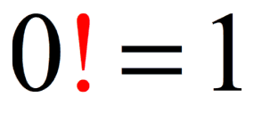

Faktoriaal

Faktoriaali definitsiooni järgi on 0! = 1. Iga teise naturaalarvu puhul on n! võrdne arvude 1 ... n korrutisega.
Näiteks:
- 3! = 1 x 2 x 3
- 4! = 1 x 2 x 3 x 4 x 5
Nagu näha, on 4! arvutus väga sarnane 3! arvutusele - selleks, et arvutada 4! võiksime me arvutada 3! ja korrutada saadud tulemuse 4-ga. Seda asjaolu arvestades on kirjutatud järgnev rekursiivne faktoriaali definitsioon:
def fact(n):
if n == 0:
return 1
else:
return fact (n-1)*n